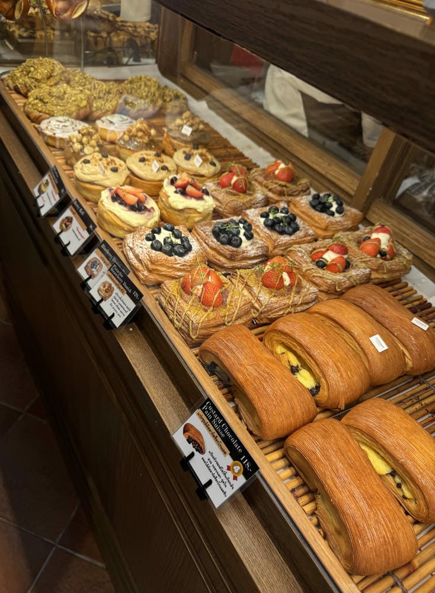
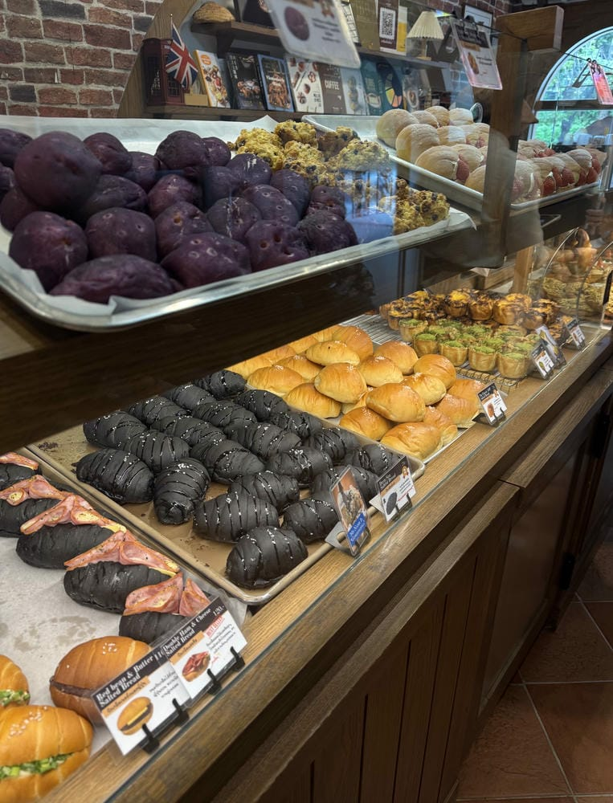
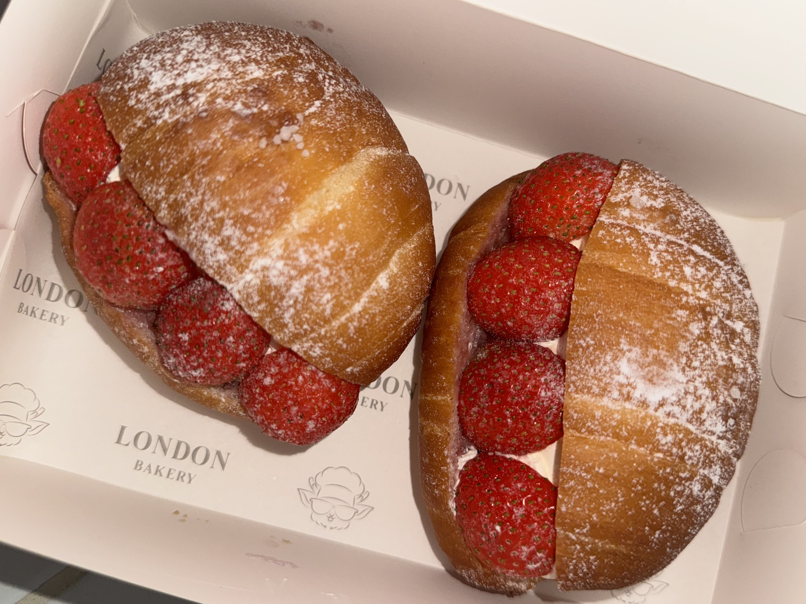
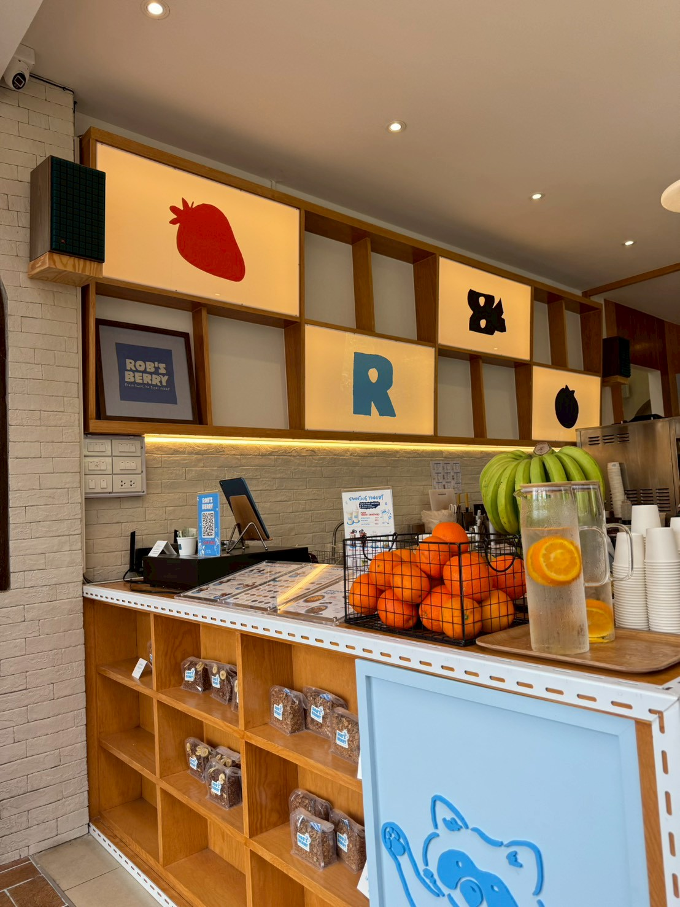
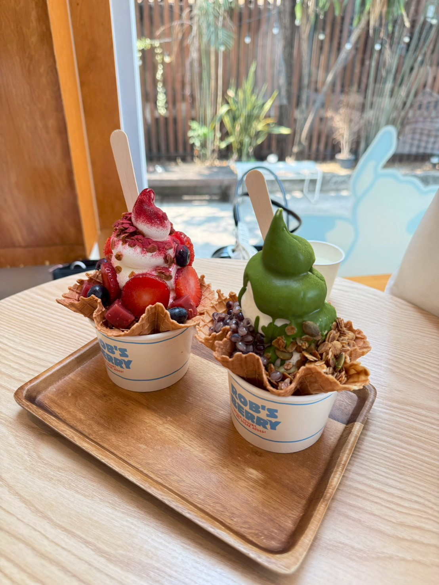
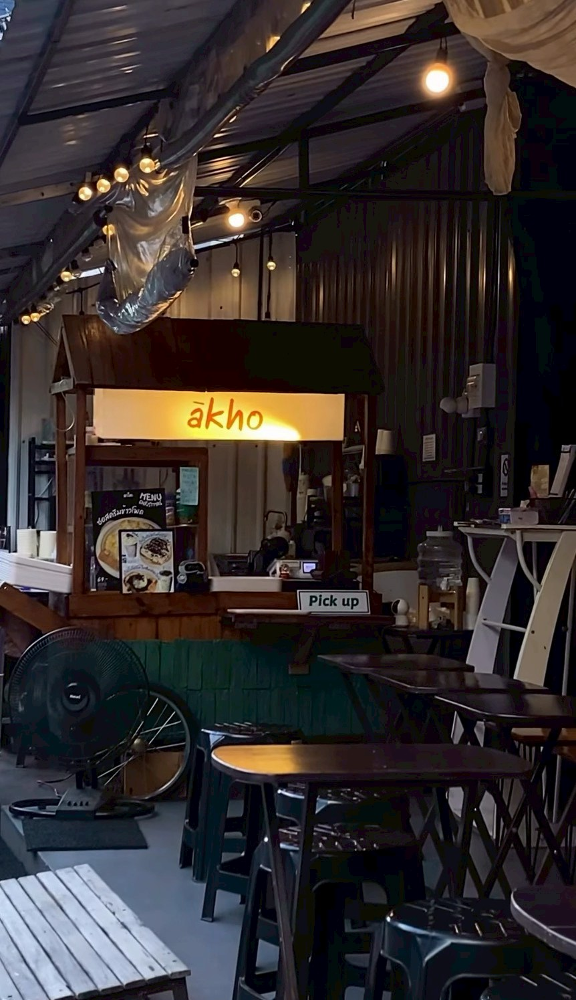
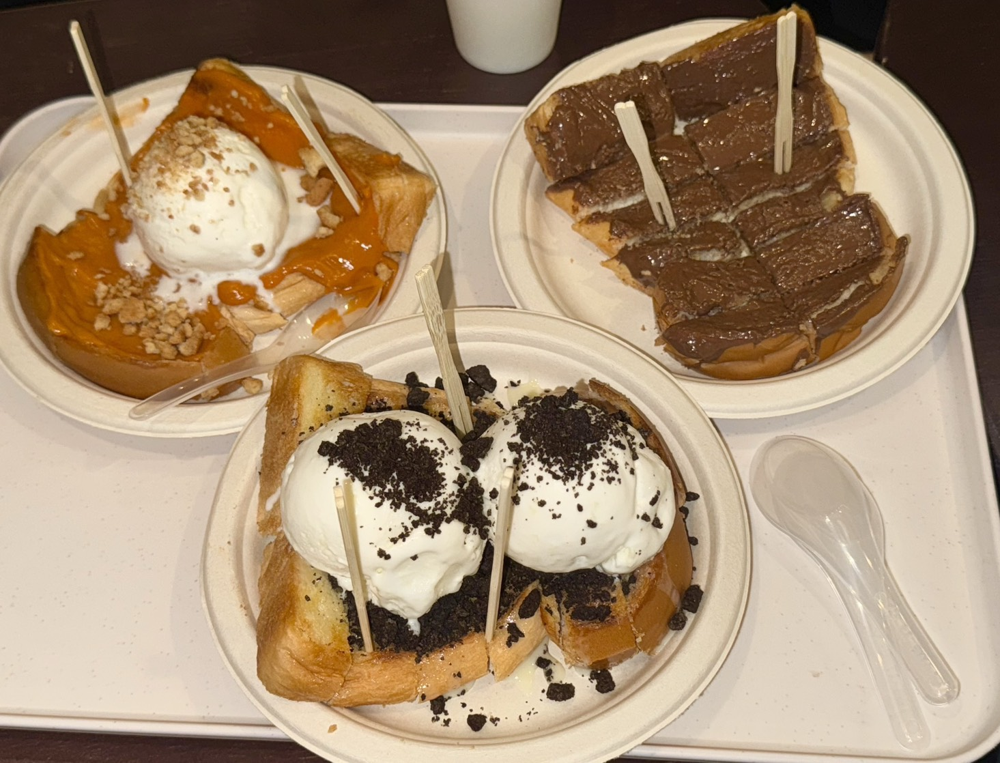

LONDON.cnx



LONDON.cnx is one of the most popular bakery cafés in Chiang Mai. Inspired by the charm of London cafés, it offers a warm and cozy atmosphere with freshly baked pastries prepared every day. The café is famous for its artisan breads, croissants, and signature desserts that pair perfectly with coffee. Whether you are looking for breakfast, an afternoon break, or a relaxing place to meet friends, LONDON.cnx is a great choice.
Rob's Berry


Rob's Berry is one of my favorite dessert cafés in Chiang Mai. I visited this café with my friends and really enjoyed its cozy atmosphere and beautifully presented desserts. The café is well known for its frozen yogurt, acaí bowls, fresh seasonal fruits, waffles, and refreshing drinks. Every menu is prepared with high-quality ingredients, making it both delicious and visually appealing. Whether you are looking for a healthy dessert or a sweet treat after a meal, Rob's Berry is a great place to relax and spend time with friends.
ākho


ākho is one of my favorite dessert cafés in Chiang Mai. I visited this café with my friends and really enjoyed its cozy atmosphere and delicious toast desserts. The café is famous for its crispy toasted bread served with a variety of toppings, honey toast, ice cream, and refreshing drinks. Every menu is freshly prepared and perfect for sharing with friends. If you are looking for a late-afternoon or evening dessert spot in Chiang Mai, ākho is definitely worth visiting.